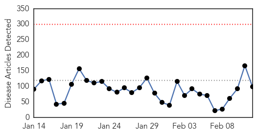
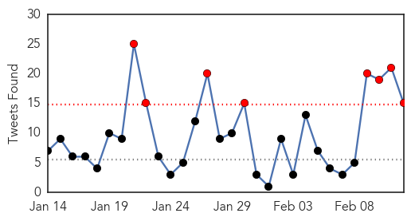
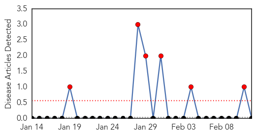

Ebola
30-Day Web Trend
0 alerts, 0 warnings

30-Day Twitter Trend
8 alerts, 0 warnings

Article Locations

Article Confidences

Top Articles:
- 1.000
- Ebola: new study models a deadly epidemic
- 1.000
- Cayman's Ebola response scaled down
- 1.000
- Red Cross highlights attacks on Guinea Ebola workers
- 0.999
- Why Didn't Ebola Kill Me?
- 0.999
- President says US has met Ebola 'challenge'
- 0.999
- Obama: US has 'risen to the challenge' of fighting Ebola
- 0.999
- Ebola cases on the rise for 2nd month - WHO
- 0.999
- Médecins Sans Frontières (MSF) International
- 0.999
- CDC adviser visits school after aiding Ebola efforts in Sierra Leone
- 0.999
- West Africa sees spike in Ebola cases as decline stalls, WHO says
- 0.999
- West Africa sees spike in Ebola cases as decline stalls, says WHO
- 0.998
- Obama says US has 'risen to the challenge' of fighting Ebola
- 0.998
- Obama says U.S. has ‘risen to the challenge’ of fighting Ebola
- 0.998
- Water relief continues in West Africa
- 0.998
- Red Cross Attacks on Guinea Aid Workers Increase Ebola Risks
- 0.997
- Red Cross Ebola workers face attacks
- 0.997
- Attacks on Guinea Aid Workers Increase Ebola Risks
- 0.997
- Ebola Cases Decline In West Africa, Over 80 Percent In Sierra Leone
- 0.996
- Most troops sent to Liberia to return early
- 0.996
- Ebola-hit Guinea asks for funds for creaking health sector: TRFN
- 0.995
- US troops fighting Ebola to leave Liberia by end of April
- 0.995
- Ghana is ill-prepared to handle any Ebola outbreak- GMA Prez
- 0.994
- Ebola Epidemic Should End in May, Say Disease Modelers
- 0.994
- Cebu News, The Freeman Sections, The Freeman
- 0.994
- US withdrawing most Ebola troops from West Africa
- 0.994
- More than 1000 US soldiers fighting Ebola in Liberia Guinea and Sierra Leone to be home by April 30
- 0.992
- Ebola response coordinator Ron Klain's last day at the White House
- 0.992
- Ebola vaccine undermines child immunization in Liberia
- 0.990
- Ebola Disease: US To Withdraw Troops From Liberia
- 0.988
- West Africa Ebola cases decline, but could bounce back soon
- 0.988
- President: Massive Global Effort Created Anti-Ebola Success
- 0.986
- Ebola cases show rise for second week in row
- 0.983
- Guinea applauds Pres. Sirleaf
- 0.982
- Politico SL News Plan Int’l warns against Ebola complacency
- 0.980
- Jim Bowden: When we’ll know if A-Rod ‘can still play’
- 0.980
- Advocates push for indoor tanning ban for minors
- 0.980
- Counterpoint: Stifle research? No, it's about avoiding wasteful spending
- 0.980
- Sierra Leone News : Project Cure-USA Donates to the Ebola Fight: Sierra Leone News
- 0.980
- Schools Closed by Ebola Reopen in Guinea and Liberia
- 0.978
- Politico SL News Dilemma of Ebola survivors in Sierra Leone
- 0.976
- Military healthcare workers in Ebola scare leave hospital after getting all clear
- 0.976
- Obama orders pullback of troops fighting Ebola in West Africa
- 0.971
- Ebola Marklate for Sierra Leone Slated for March 2015
- 0.970
- Operation fightback: how doctors turned the tide on Ebola
- 0.969
- Two British health care workers discharged after Ebola monitoring
- 0.969
- US Withdrawing Troops Sent For Ebola
- 0.966
- Brave Welsh medic insists it's time to end ban on direct flights to Ebola-infected West Africa
- 0.964
- United States Announces Additional Results in Grand Challenge to Fight Ebola
- 0.964
- US Troops Fighting Ebola are Being Withdrawn
- 0.954
- NMC Doctors Recognized by President Obama, Visit the White House
Showing top 50 articles...
Top Tweets:
- 0.941
- RT: WHO: no control over spread of Ebola EbolaOutbreak Liberia WesternAfricanNations WorldHealthOrganisation http://t.…
- 0.760
- The Ebola Diaries: Trying To Heal Patients You Can't Touch - NPR (blog) http://t.co/zTrPAbydsI ebola EVD
- 0.756
- RT: @WHO DG Chan tells Ebola Exec Board "Well functioning health systems are not a luxury" - safe high quality people ctred…
- 0.676
- African refugees quarantined in London Ont. test negative for Ebola - Toronto Sun http://t.co/jnBiMbQKg5 ebola EVD
- 0.666
- RT: We must get to & stay at zero cases of Ebola in W Africa. That will take ongoing monitoring & surveillance investments …
- 0.648
- Confronting the gender impact of Ebola virus disease in Guinea Liberia and SierraLeone http://t.co/EYRn1GlSZr
- 0.634
- Ebola Victims Still Infectious a Week After Death Scientists Find - New York Times http://t.co/7frnrolGDa ebola EVD
- 0.629
- RT: Logistical capacities of U.S. troops in Liberia superseded efforts in hospital bldng ebola htt…
- 0.607
- RT: "Thank you to the troops & public health workers who left...loved ones to head into the heart of the Ebola epidemic in West Af…
- 0.588
- Obama's Ebola Victory Lap - National Journal http://t.co/TxN1cmoWPI ebola EVD
- 0.553
- Ebola healthcare workers discharged - BBC News http://t.co/mjeiJ0V0q1 ebola EVD
- 0.535
- Ebola crisis: Red Cross says Guinea aid workers face attacks - BBC News http://t.co/jJ94qudF1N ebola EVD
- 0.521
- RT: @WHO Ebola special sessions- S Africa for AFRO "We talk about health systems strengthening but we do not really do it" h…
- 0.513
- If you live in any of the affected countries please play your part and help people understand that Ebola survivors are no longer infectious
- 0.503
- Great news: 2 UK military healthcare workers watched because of possible Ebola exposure released from hospital in London. Not infected.
Bubonic Plague
30-Day Web Trend
6 alerts, 0 warnings

30-Day Twitter Trend
0 alerts, 0 warnings

Article Locations

Article Confidences

Top Articles:
-
No articles found for Feb 12, 2015
Top Tweets:
-
No tweets found for Feb 12, 2015